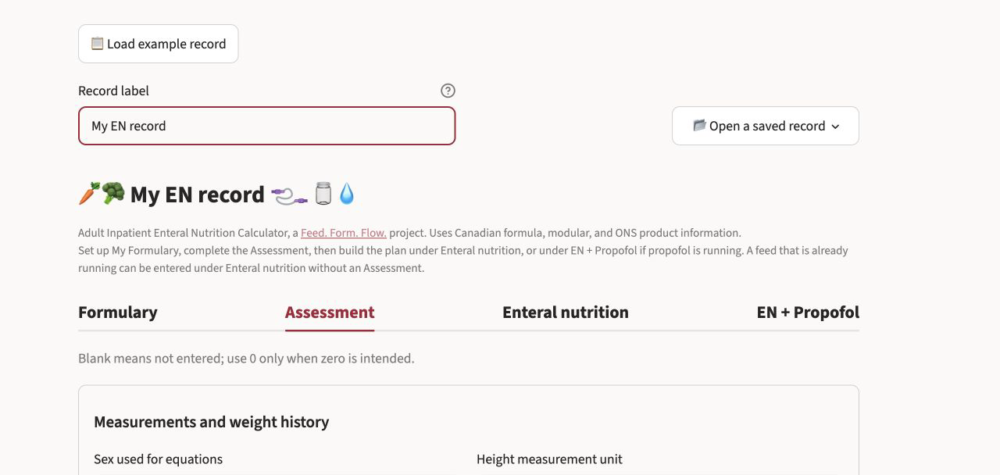

ENCalc
Plan a new tube feed or review one already running for an adult inpatient.
ENCalc brings the feed, modulars, oral nutritional supplements, IV fluids, propofol, water and flushes into one daily view. It uses Canadian manufacturer product information and a formulary you can edit for your site.
Free to use. No account or installation required.
If the calculator has been quiet for a while, Streamlit may ask you to wake it. The first load can take a minute.

Plan or review a feed
ENCalc can start with assessment goals, but it does not require them. If a feed is already running, enter the order directly and review what it provides.
- Build My Formulary from the included products, edit values to match local labels, or import a local formulary workbook.
- Set up a continuous, cyclic or intermittent feeding schedule.
- Review energy, protein, water and electrolytes alongside modulars, oral nutritional supplements, IV fluids and propofol.
- Set a hydration flush schedule and see where every millilitre comes from.
- Review the daily intake and EN regimen check before using the editable chart-note draft.
- Download a case-record workbook and reopen it later.
How it works
-
1
My Formulary
Add the feeds and modulars used at your site. Product values remain editable because labels and local formularies differ.
-
2
Assessment
Enter the measurements and clinical information you have. Review the equations and worked ranges, then choose the energy, protein and water goals you want to use.
-
3
Enteral nutrition
Choose a formula and delivery schedule, compare the suggested and selected rates, and review the full regimen. Use EN + Propofol when propofol energy needs to be included.
-
4
Review and record
Check the daily totals and regimen review. Edit the chart-note draft, copy it when ready, or download a case-record workbook to reopen later.
These steps correspond to the four tabs across the top of the calculator.
Calculation methods and plan details
Assessment
- Weight-based energy ranges, Mifflin–St Jeor, Harris–Benedict, Penn State 2003b and Modified Penn State 2010 are shown side by side when relevant.
- Available weight bases include current weight, Hamwi ideal body weight in SI units, the Devine medication-dosing reference weight, adjusted body weight with an editable factor, and a dry weight entered by the clinician.
- The equations and worked ranges remain visible before the clinician selects the goals to use.
Enteral plan
- Compare formulas from My Formulary at a selected volume.
- Calculate continuous, cyclic and intermittent feeding schedules.
- Review formula free water, hydration flushes and a ledger showing where each volume came from.
- Include modulars and oral nutritional supplements in the daily totals.
- Account for propofol using one rate or rates that change through the day.
Record
- Review a daily intake table and EN regimen check.
- Edit and copy an ADIME chart-note draft.
- Download a case-record workbook containing the assessment, plan inputs and formulary snapshot.
Data and limitations
ENCalc currently includes 33 enteral formulas, 7 modulars and 20 oral nutritional supplements. Values come from manufacturers’ Canadian product information. Each product record includes the source document, page and date checked.
An em dash means that the manufacturer did not disclose the value. ENCalc does not treat an undisclosed value as zero. Product values remain editable because labels and institutional formularies differ.
Suggested feed rates use clinician-selected goals, products and other inputs. The clinician chooses the final rate, modular order and hydration plan.
Verify product values against current local labels and your institutional formulary before clinical use.
Records and privacy
ENCalc has no account system, shared workspace or patient-record database. It uses the information entered during the active Streamlit session to calculate and display the results. It does not retain those inputs as saved case records.
Downloaded case-record workbooks are saved wherever the user chooses. Use a non-identifying record label unless local policy permits otherwise, and follow institutional policy when storing or transferring a workbook.
If information must never leave the clinician’s device, ENCalc can be run locally instead.
Try ENCalc
Open the included example record to see how the calculator works without entering patient information.
Free to use. No account or installation required.
A related tool
BTFCalc estimates the energy, protein, fluid and micronutrients in a home-blended tube feed using the 2026 Canadian Nutrient File.